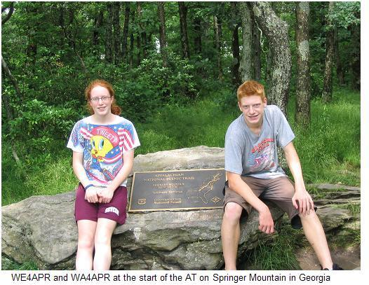
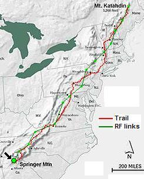
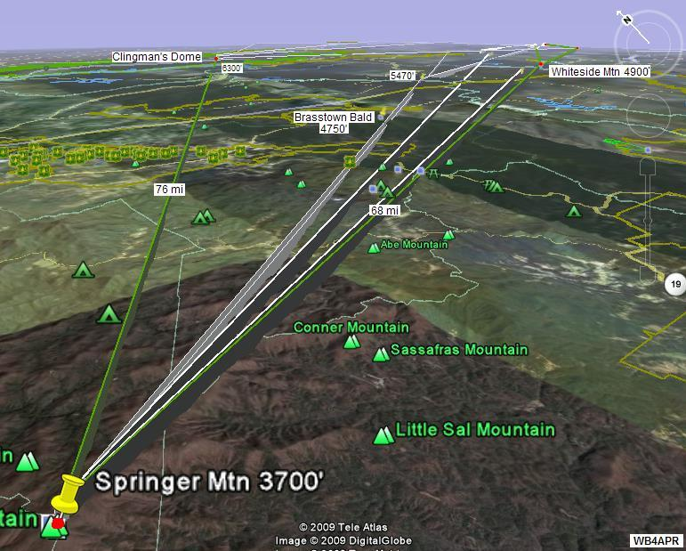
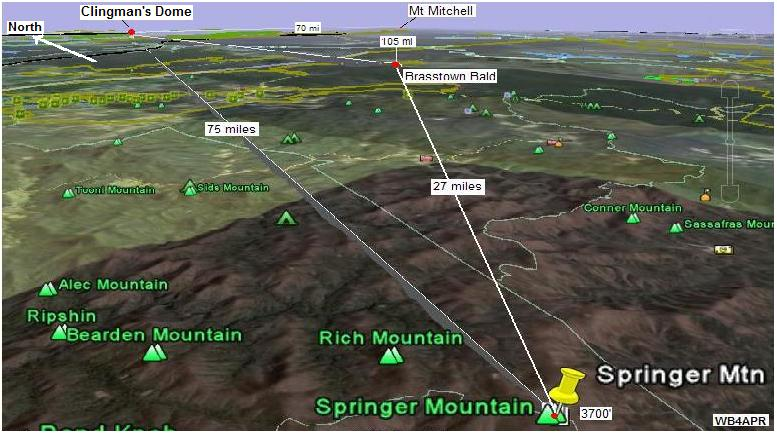
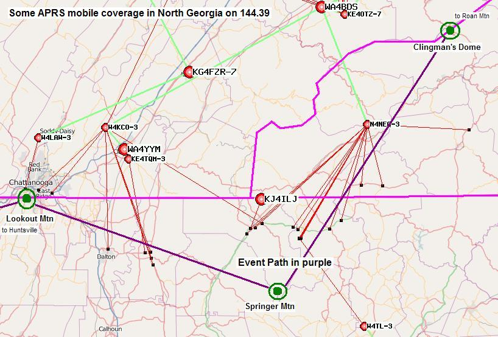

2014 SUCCESS! Operators at Springer Mountain were Tom KG4VUB, Frank K4SJR, and Glenn N4AZR. This year they used the drive-up site a short distance down the road from the actual summit. It has the advantage of an excellent line of sight to Clingmans Dome across an open field. They met on the mountain at about 10am and deployed Glenn's D700 digipeater and Diamond X30 vertical on a paint pole mast by 10:30am or so. While setting up, Tom made voice contact with Larry, K4AEC at Clingmans Dome off his mobile radio. We saw Clingmans Dome on APRS at about 11:10am and Roan came in a few minutes later. Glenn set up an Xastir logging station and copied one beacon from Clingmans before it stopped working.
At about 11:30am they saw Apple Orchard on APRS even though word via UHF at about the same time indicated that Comers Rock was still setting up. Was there a band opening? They spent the next hour or so watching stations fill in to the North while still fiddling with Xastir (later working perfectly with his D72 HT for next year). Tom got his TNC up so they could at least see the raw packets. They were very happy to see Kathadin at about 12:45pm (having been worried that Tim might summit Kathadin and head down before the rest of the stations got online.) Lynn, KJ4ERJ the coordinating shack potato called the team about the time we saw Kathadin and asked Springer to turn up their beacon rate from 10 to 2 minutes to improve the chances and my next beacon must have completed the Golden Packet from 1 to 15 at about 12:47pm.
Glenn attempted to send a message to Kathadin with the text "golden packet" but were not sure in the ensuing load of packets if it was ever received or acked. Speaking by phone with Lynn a few minutes they found out that Tim was already on the way down from Kathadin. Lots of messages and bulletins were sent at about this time too. Springer received messages from Sugarloaf, Equinox, Camelback, and Lookout Mountain - and bulletins from GD Hill and Hawksbill. We did reply back to Sugarloaf and actually got an ack back from them 14 hops away. Impressive!
Glenn reported that the D700 interface was not ideal for messaging when there was a lot going on. Near the end of the day we messaged Lookout Mountain which I think he received direct and got an ack from them too. They shut everything down at about 2pm. Weather was pretty good the whole time - overcast and foggy with temps in the upper 60's to low 70's. They got a little rain while taking everything down but that was it. They talked to a couple of hikers driving down who were very interested in their setup once they explained it. Otherwise it was very quiet at the top of Springer Mountain. Their connection to Clingmans Dome was solid S9+ on VHF and UHF. Cell and 1X data coverage was marginal with only one working spot near the front of the car for Yahoo mail, ANSRVR via APRSdroid, and calls.
Access: As of 2014 access to Springer seems best from Nimblewill Gap to the East. It is about a 1 hour drive from Dahlonega. Access requires driving on several miles of unpaved forest service roads. From the East FS#28-1 is very bumpy with lots of rocks and potholes to dodge. From there, FS42 from the East is very smooth and well maintained. To the West FS42 remains smooth but is very muddy. Glenn got his car up there from the East and down to the West with no issues but warns others to take their time and go slow.
Special thanks to Tom KG4VUB and Frank K4SJR for scouting out the area for Glenn so he could drive down from NC with no trouble! And thanks to all who have participated in this exercise past and present for a great time playing radio on Sunday morning! While we were waiting for stations to the North to come in, we spent a lot of time talking about how to make the Springer Mountain site better for next year. The unanimous decision was to have a portable grill and cook hot dogs for lunch during the Golden Packet event!
2013 Planning: Jorge, NN4QQ is leading the effort this year. See the summary spread sheet.
2012 Planning: Jorge was leading but Seth, N6WPV cannot make it on saturday. John Gorkos, A0OOO and others are teaming up to assist with Springer and see about other mountains in the area, maybe Lookout MTN, Stone Mountain or Tom, W4SDR on Swanee Mtn. But making Springer a two-way site will require a 50' mast or so to clear the trees maybe...
2011 Plan: Seth, N6WPV, and KJ4UYS may drive up from Florida! If so, we found a drive-up option about 1/2 mile from the springer back-woods parking lot. This location has a good northern horizon towards the NE and to Clingmans dome (but not to south). See the view.
2010 was a GO! Paul Deffenbaugh was team lead.
2009 suuccess! In 2009, Springer saw Huntsville, Lookout Mountain, Clingman's dome and Roan Mountain. See the 2009 Springer Report
See the Golden Packet plan. . This is one of the 15 hill-top sites from Georgia to Maine we hope to visit this summer on 26 July for 6 hours to attempt to relay a text message using hand-held radios the 2000 mile length of the Appalachain trail. This is to be a no impact Leave-No-Trace type of event of a few individuals at each site. . Other hikers equipped with APRS ham radios are welcome to participate after the initial tests when the net will be open to other hikers after 3 PM.
Springer Mountain marks the beginning of the Appalachain Trail in the North Georgia Mountains. It is completely tree covered and will require some effort to have a clear path to the Northeast to see either of the two possible paths. In the image below, two APRS hikers (Bethanne and AJ) frame the brass plaque that marks the beginning of the trail. In the background you can see some sky through the trees. The northeast link to the next Golden Packet station can be moved towards the downward slope of the hill in that direction making it possible to shoot between the trees rather than over them.

Tree Blockage:
Operating from one side to solve the tree problem, however, introduces blockages
if we also want to try to activate the secondary links to Atlanta and Huntsville Alabama.
ALTERNATE PATH: From Springer there is an alternate path through South Carolina and North Carolina around the southeast edge of the mountains. This path gains good Height Above Average Terrain by using lower hills, but that are separated by relatively flat ground. We might want to activate both paths to double our probability of getting packets to Virginia.
CALLSIGN: . . . . . . . . . . . SPRNGR-1
ALTITUDE: . . . . . . . . . . . 3700 feet
POSITION:. . . . . . . . . . . . 34-37.6N / 84-11.62W
LINK NORTHEAST: . . . Clingman's Dome.
RF details
by John
LINK WEST:. . . . . . . . . . Huntsville, Alabama (secondary link)
LINK SOUTH:. . . . . . . . . Atlanta?
VOICE REPEATER: . . . . 145.37 T100 - KB4IZF repeater in Jasper
. . . . . . . . . . . . . . . . . . . . . . 146.820 T146 - W4DOC in Altanta

ECHOLINK NODES: . . . N4KHQ-R 146.835 T100 Dahlonega, Ga, 25 miles away
. . . . . . . . . . . . . . . . . . . . . . N0TH-R 443.75 T103 Jasper,GA, 49 miles away (split with 145.52?)
INTERFERRENCE: . . . . Minimal. All emitters are 1/4 mile further up the hill
TEAM LEADER: . . . . . . Paul Deffenbaugh, KJ4DXK-9 (2010)
. . . . . . . . . . . . . . . . . . . . . . Josh Goldfarb,
. . . . . . . . . . . . . . . . . . . . . . Chris Struttmann,
. . . . . . . . . . . . . . . . . . . . . . Patrick Duran,
CHALLENGES: . . . . . . . 1 mile hike-up... or Alternate field (N. only)
. . . . . . . . . . . . . . . . . . . . . Trees require mast, or special placement.

COMMENTS: . 2010 participants. Paul was lead in 2010 with the help of Chris, Josh, Patrick. They have reservations at the Hiker Hostel.
2009 Participants:
KI4SGU Jorge Luis de la Torre (peak-2-peak group) jorgedlt*yahoo.com & Sons - Nick & Jake (NL)
Eddie Foust [wd4jem * bellsouth.net]
(who operates APRS digis in the area)
K4JFF Mel - Event historian!
KJ4ERJ - Lynn Deffenbaugh & wife (Marta)[KJ4ERJ*arrl.net]
KJ4DXK - Paul Deffenbaugh
WI8H - Thomas (the reason we're all hams)
W4SGC - Josh Saint (owns HikerHostel nearby, about 6 mi north of Dahlonega
KJ4HPQ - Chris (the late arrival)
Newton White K0NWT - Atlanta Based Ground Support
John N4AOW - Cleveland, TN Based Ground Support
Local Area APRS SYSOP: Eddie Foust [wd4jem * bellsouth.net] operates APRS digis in the area...
Previously reported: Road access is possible from two places, USFS service road 28 is 2.8 miles south of Springer at Nimblewill Gap(3100 ft) and leads to GA highway 52. A closer road from the North uses USFS 42 about 1 mile away and around 3400'
Springer Mountain, the starting point of the AT is an elevation of 3782 ft. The top is wooded, though the trees are under 50' and vegetation will be pretty thick to the north and east in July.
SECONDARY LINK TO LOOKOUT MOUNTAIN AND HUNTESVILLE: See the Secondary Link web page and the specific web page for Huntsville noted above.
Alternatives: If needed Wayah Bald in Macon Co, NC could be a good mid point between Springer and Roan. From Wayah you may be able to bypass Clingmans on to Roan. That path may need to be checked. Wayah Bald is a good drive up site at 5342 ft and is near the site of the 147.24 repeater with excellent coverage. The path between Roan and Wayah (approx 80 miles) would need to be checked. Springer to Wayah (between 60 to 70 miles) should be an easy hop. With easy drive up access Wayah could be a good super station location using directional antennas, etc.
Eddie, WD4JEM
The RF paths from Springer to Mt Mitchel in North Carolina is blocked by Brasstown Bald but the route to Glingmans is pretty good but has some difficult mountains closer to springer as shown in the detail RF link analyses.


DETAIL LINK ANALYSIS BY KX4O: Be sure to follow the two RF links at the
top of this page to see the excellent and very detailed RF link analysis
performed for every link in this project by KX4O John Huggins.
Each RF link shows the terrain map
elevations, the AT trail in yellow, the RF path loss itself
including fresnel zones and finally a
statistical plot of the probabilities of link availability. We will very
much be looking at the results of this project compared to the pre-event
analysis and predictions. All of KX4O's links are shown on his
AT Links Page.
But operating with a beam on Springer should make the link possible. But using a beam in only one direction will complicate the operation with the link to Lookout Mountain and Huntsville if that is also going to be attempted.
SECONDARY DIGIPEATERS: For maximum RF participation in the 13+ states of the AT, there can be Secondary DIGIs that can relay the Golden Packets outward from the trail in some directions. For example, the path from Springer Mountain over to Lookout Mountain in Chatanooga and from there on to Huntsville Alabama should work fine. But the problem here is all the trees on Springer requiring a tall 50' mast to clear the trees in both directions to Clingmans to the northeast and Lookout mountain to the west.
On those peaks, secondary digis can have an INPUT only on the EVENT channel, and an output on some secondary LOCAL frequency. This secondary digi will then carry all of the long haul golden packets, but will not add any QRM, because its output is on a different frequency. Creative networks can be established radiating outward anywhere on the trail as long as ALL such packets are *NOT* on the main event channel. Using these paths, those areas are able to participate and to demonstrate their ability to join the long-haul emergency network in time of disaster.
The goal of this event is to break the mold of Field Day and VHF contesting and do something different. To test and demonstrate our ability to build an instant ad-hoc network using APRS (or packet) for long-haul RF digital communications.

The map above shows the APRS coverage along I-40, I-75 and in North Georgia during my last trip down there.
Bob, WB4APR
See my other GENERAL page on APRS applications and Ideas on the AT
Return to the APRS HOMEPAGE or SiteMap.
{kind=link}